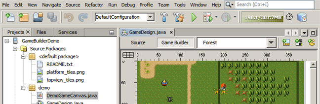

Приложения Java ME и встроенные приложения

Для перехода к полноэкранному предварительному просмотру щелкните изображение
{kind=link}
Создавайте, тестируйте, выполняйте отладку и развертывание приложений, которые будут выполняться на Raspberry Pi, мобильных телефонах, КПК, приставках, а также на других мобильных и встраиваемых системах.
{kind=link}
Java SE Embedded
Платформа Java SE Embedded оптимизирует Java SE для встроенных систем среднего и высокого класса. Устройства объемом 32 Мб (без графики) и более для Java могут использовать Java SE Embedded.
Среда NetBeans IDE предлагает полную поддержку в процессе разработки для удаленных встраиваемых платформ, включая интуитивную разработку, развертывание одним нажатием, удаленную отладку и комплексное дистанционное профилирование.
Например, среда IDE предоставляет полную сквозную интеграцию с Raspberry Pi. Приложение разворачивается одним нажатием, после чего выполняется его отладка и профилирование.
Карты обучения технологии NetBeans
{kind=link}
Java ME Embedded
Java ME Embedded представляет собой часть платформы Java SE, сконфигурированную для устройств с ограниченными ресурсами и оптимизированную для встраиваемых систем низкого и среднего уровня. Устройства объемом 8 Мб (без графики) и более для Java могут использовать встроенные приложения Java ME.
Среда IDE поддерживает использование эмулятора платформ Java ME 8 CLDC, предоставляет интуитивно понятные инструменты и редакторы для Java 8 в Java ME и позволяет легко настраивать дополнительные пакеты платформы Java ME Embedded.

Телефоны, портативные устройства, Java-карты и телевизионные приставки
Создавайте, тестируйте, отлаживайте приложения для Mobile Information Device Profile (MIDP) 1.0, 2.0, 2.1 (MSA), Connected Limited Device Configuration (CLDC) 1.0 и 1.1, а также Connected Device Configuration (CDC).
IDE поставляется в комплекте с Java ME SDK, который поддерживает разработку как CLDC, так и CDC. Можно зарегистрировать другие мобильные и встроенные платформы в меню "Сервис".
Карты обучения технологии NetBeans
{kind=link}
Java Card
Java Card Platform - это виртуальная машина Java, которая запускается на смарт-картах. Платформа поддерживает знакомые интерфейсы API Java, например сервлеты, и позволяет создавать веб-приложения, выполняемые на портативных устройствах.
IDE поддерживает проекты Java Card, развертывание апплетов Java Card и консоли устройств Java Card.
{kind=link}
Visual Mobile Designer
Быстрая разработка графических интерфейсов пользователей с помощью Visual Mobile Designer. Также поддерживаются такие перетаскиваемые компоненты, как экраны ожидания, экраны входа в систему, обозреватели файлов, средство составления SMS-сообщений и экраны-заставки. Средство анализа позволяет уменьшать размер файла за счет идентификации и удаления неиспользуемых компонентов, а также выполнять проверку соответствия платформе MIDP 1.0. VMD также облегчает локализацию графических пользовательских интерфейсов.
Примечание.Visual Mobile Designer доступен в центре обновлений NetBeans. Для запуска VMD в среде IDE необходимо установить подключаемый модуль Visual Mobile Designer из центра обновлений (Инструменты > Подключаемые модули > Доступные подключаемые модули).
См. также
- На странице сведений о версии IDE netbeans 8.1 приведен список выделенных функций в последней стабильной версии.
- Учебная карта по общим сведениям о разработке на Java для учебных курсов по началу работы.